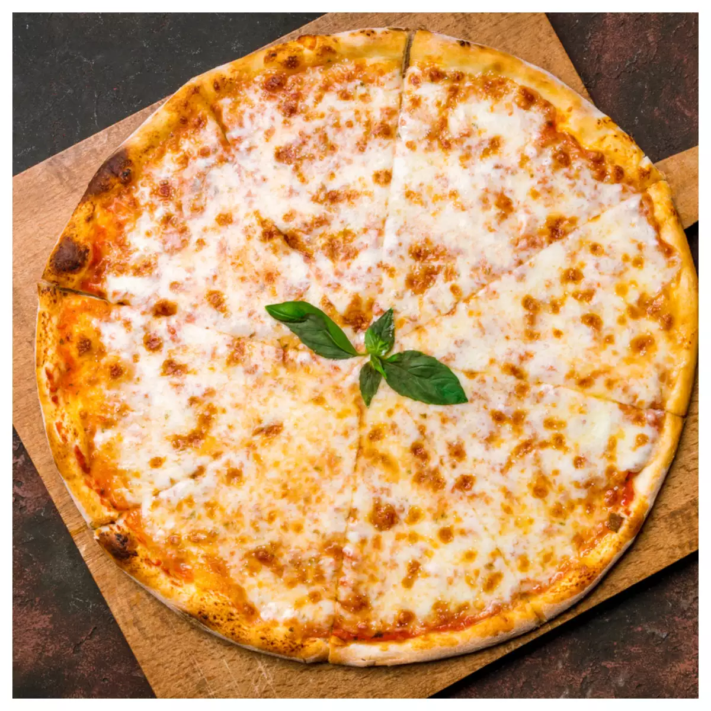

Pizza Margarita

Description
Pizza Margherita is a classic Neapolitan pizza known for its simplicity and freshness.
It highlights the colors of the Italian flag with red tomato sauce, white mozzarella cheese, and green basil leaves.
Light, flavorful, and perfect for showcasing quality ingredients, this pizza is a timeless favorite.
Ingredients
- Pizza dough – 1 base
- Tomato sauce – ½ cup
- Fresh mozzarella – 100g
- Fresh basil leaves – a handful
- Olive oil – 1 tablespoon
- Salt – to taste
Steps
- Preheat oven to 250°C (480°F) or as high as possible.
- Spread tomato sauce evenly over the pizza dough.
- Tear and place mozzarella pieces on top.
- Add fresh basil leaves.
- Toss cooked pasta in the sauce and mix well.
- Drizzle with olive oil and sprinkle with salt.
- Bake for 7–10 minutes until the crust is golden and cheese is bubbly.
- bonappetit
Home